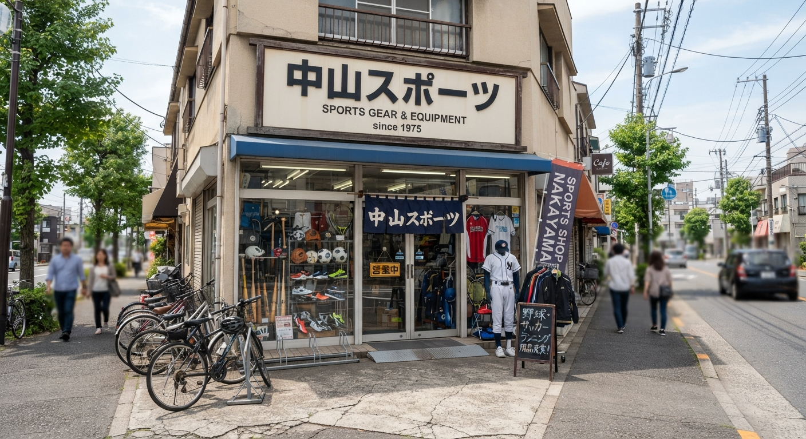
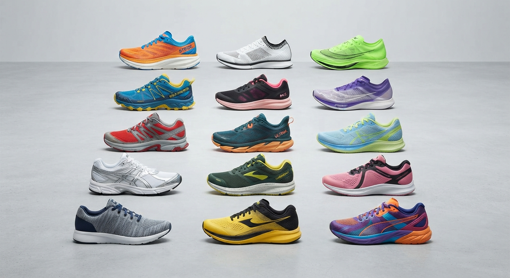
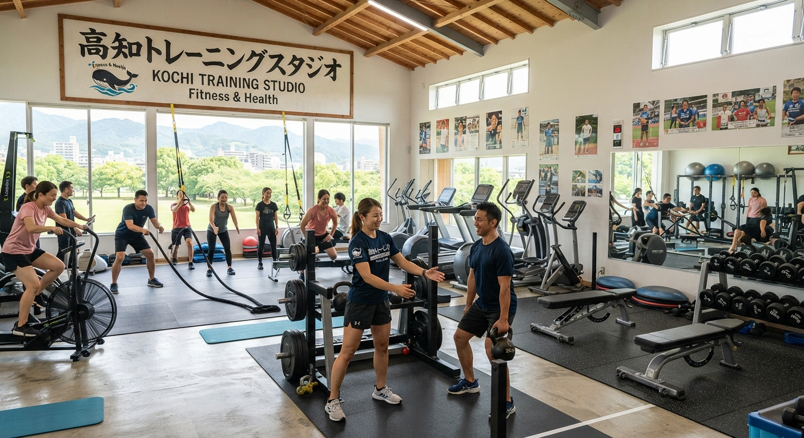

あなたの足に本当に合う一足を、専門スタッフが徹底サポート

お客様満足度★★★★「アルトラのローンピーク7が気になって滋賀県内で探し、中山スポーツさんに飛び込みました」——丁寧な接客で何足も試し履きができ、ご要望にぴったりの一足に出会えたとお喜びの声をいただいています。レアなブランドの取り扱いや、足裏のマメ（肉刺）に悩む方向けの専門的なフィッティングにも対応。
1970年創業。滋賀・大津の地で信頼を築いてきたスポーツ店です
お医者さんではありませんが、靴選びのプロとして5,000人以上のお客様をサポート。お客様の足や靴、歩き方を見て痛みの原因を探り、徹底的に改善のお手伝いをいたします。
関西でも珍しい高地トレーニング設備を完備。科学的なトレーニングで日本一になったボート選手も。お子様の加圧式トレーニングにも対応しており、野球をされているお子様の保護者様からも高評価をいただいています。

スポーツ用品なら何でも取り扱い、店頭にない商品もカタログで注文可能。シューズ専門店も併設し、ビル内には塾や歯科医院も入る便利な立地です。
中山スポーツは1970年、唐橋の西岸にて創業。その10年後、現在の大津市千町に移転し現在に至ります。創業当初より多くの官公庁・学校様とお取引をいただき、外商営業を中心に信頼を築いてまいりました。近年はウォーキング部門の新設や高地トレーニングスタジオの運営など、時代のニーズに応えるスポーツ店として日々進化を続けています。
アルトラのシューズが気になり、滋賀県の取り扱い店を調べたら中山スポーツさんが見つかり飛び込みました。丁寧な接客対応のお陰で、沢山のシューズを試し履きすることができ、私の要望に沿った結果ローンピーク7を購入。商品にも大変満足しております。ありがとうございました！なんでもある。スポーツ用品で無いものはカタログで頼める。シューズ専門店もある。ビル内に塾、歯科医院などがある。けど、剣道用品は置いていない。
社長さんはじめ、スタッフのみなさんとても親切です。うちの息子は野球をしていますが、加圧式トレーニングでお世話になっています。関西では珍しい高地トレーニング設備を置いておられます。おそらく滋賀ではここだけ、京都にもないんじゃないでしょうか？この高地トレーニングで科学的にトレーニングをされて、日本一になられたボート選手もおられるようです。目の前には美しい瀬田川が流れています。2021年からSUP体験教室も始められるとのこと、とても楽しみです。新しいことをどんどん取り入れされている、とても素晴らしいスポーツショップです。
| 店名 | 中山スポーツ（株式会社中山スポーツ） |
|---|---|
| 代表者 | 中山 博識 |
| 住所 | 滋賀県大津市千町１丁目２５−２５ なかやまビル 1F |
| 電話番号 | 077-534-2525 |
| 定休日 | 毎週水曜日 |
| HP | http://www.nakaspo.jp/ |
| お問い合わせ | お問い合わせフォームはこちら |
| メール | info@nakaspo.com |
足のお悩み・靴選びのご相談はお気軽に中山スポーツへ